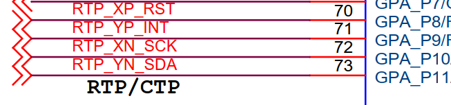

参数配置
16 May 2025
Read time: 2 minute(s)
以 D211DC-DEMO-V1.0 开发板为例，I2C 接口 3 用于与触摸屏设备通信，原理图如下：

另外根据芯片手册 > 4 引脚复用 章节可知：
-
通信接口为 I2C3，Master 模式
-
PA8 为 RST
-
PA9 为 INT
-
PA10 为 I2C3_SCL
-
PA11 为 I2C3_SDA
需配置：
-
驱动配置
-
pinmux 配置
驱动配置
-
master 驱动使能
Board options ---> [ ] Using i2c0 [ ] Using i2c1 [ ] Using i2c2 [*] Using i2c3 i2c3 parameter ---> [ ] Using I2C3 10-bit Addr(default 7-bit addr) [ ] Using I2C3 Stand Speed(default fast speed) [ ] Using I2C3 Slave Mode(default master mode) -
slave 驱动使能
Board options ---> [ ] Using i2c0 [ ] Using i2c1 [ ] Using i2c2 [*] Using i2c3 i2c3 parameter ---> [ ] Using I2C3 10-bit Addr(default 7-bit addr) [ ] Using I2C3 Stand Speed(default fast speed) [*] Using I2C3 Slave Mode(default master mode) (80) I2C3 Slave Addr注：从机模式输入的 80 是 10 进制的，换算成 16 进制就是 0x50
-
master 中断模式使能
Drivers options ---> [*] Support I2c Dev Interrupt Mode注：如果这里不进行配置，默认是使用轮询模式进行数据传输
Pinmux 配置
pinmux.c 的完整路径是 target/$(CPU)/$(BOARD)/pinmux.c， 例如 D211DC-DEMO-V1-0 开发板， demo100-nand 配置的 pinmux.c即为 target/d21x/demo100-nand/pinmux.c
根据原理图，添加如下引脚配置
struct aic_pinmux aic_pinmux_config[] = {
...
#ifdef AIC_USING_I2C3
{1, PIN_PULL_DIS, 3, "PA.8"}, // RST
{1, PIN_PULL_DIS, 3, "PA.9"}, // INT
{4, PIN_PULL_DIS, 3, "PA.10"}, // SCK
{4, PIN_PULL_DIS, 3, "PA.11"}, // SDA
#endif
...
}